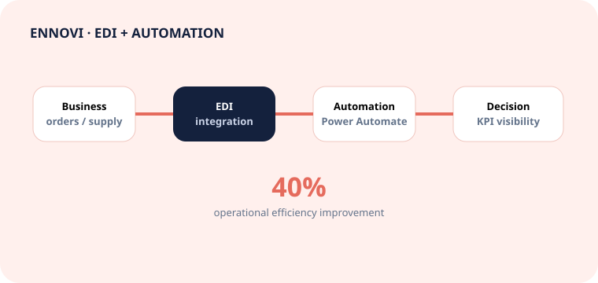

Energy utilities
CPQ→PACS→Billing
Grid Fee Hub
Designing the CPQ decision layer for billing: mapped pricing, fallback, statutory enrichment and validated Billing handoff.
Open solution story →8+ years bridging business, product and engineering across SaaS, energy and manufacturing. I translate ambiguous needs into requirements, system flows, APIs, testable acceptance criteria and delivery-ready solutions.
Open a case study to see the problem, decision logic, my contribution, technical flow and evidence—not just a list of responsibilities.
Designing the CPQ decision layer for billing: mapped pricing, fallback, statutory enrichment and validated Billing handoff.
Open solution story →
From paper logs to live field operations: assignment, attendance, geolocation, time-on-task and operational visibility.
Open transformation story →
EDI process transformation, workflow automation, KPI governance and standardized information flows.
Open case study →A repeatable analysis framework connects stakeholder intent to buildable logic, evidence and release decisions.
Interviews, workshops, problem framing, assumptions and impact.
AS-IS / TO-BE, BPMN, UML, actors, interfaces and data flows.
FRS/SRS, stories, acceptance criteria, business rules and errors.
SQL, APIs, smoke/UAT/E2E tests, logs and defect analysis.
Readiness, stakeholder sign-off, production support and learning.
Berlin or remote across Germany · English-speaking environments · Available immediately